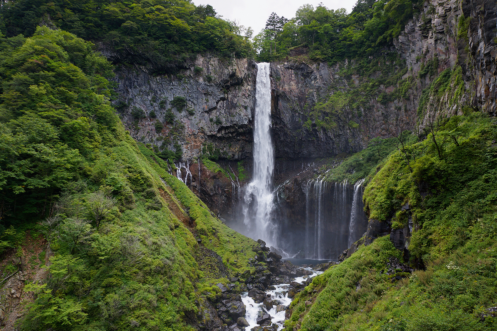
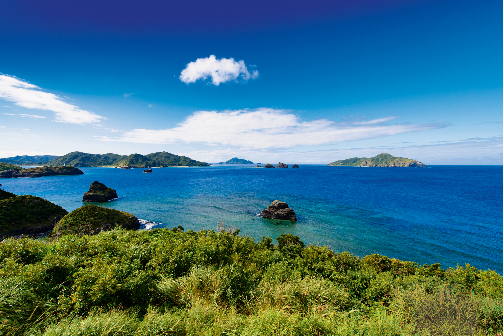

Сегодня в Японии существует 34 национальных парка.
Самый известный, пожалуй,
«Фудзи-Хаконе-Идзу», ведь расположенная на его территории гора Фудзи — главный символ страны. При этом
сегодня мало кто вспоминает, что еще каких-то 200 лет назад японцы относились к вулкану, считающемуся
самым
узнаваемым природным объектом в мире, с гораздо меньшим пиететом. Взгляд на красавицу Фудзи изменился в
XIX
веке, когда в Страну восходящего солнца начали массово прибывать европейцы. Вулкан впечатлил их не
столько
размерами, сколько формой, ведь он выглядит идеальным конусом, что соотносится с европейскими
представлениями о прекрасном.
Сегодня пешее восхождение на вершину Фудзи — одно из главных развлечений в
национальном
парке «Фудзи-Хаконе-Идзу». Подниматься на вулкан разрешается лишь в июле и августе, когда он полностью
свободен от снежного покрова. Большинство любителей хайкинга предпочитают начинать подъем на Фудзи
с середины маршрута, добравшись туда на автомобиле или автобусе. Впрочем, «демоверсии» восхождения, как
правило, хватает. Не зря же в Японии бытует поговорка: «Тот, кто ни разу не поднимался на Фудзи, —
глупец,
тот, кто поднялся дважды, — глупец вдвойне».
Многие справедливо считают, что «большое видится на расстоянии», а значит, любоваться
конусообразным силуэтом 3766-метровой горы гораздо лучше с берегов озер, что появились у ее подножия
около
50 тысяч лет назад, когда извергшиеся из жерла вулкана потоки лавы перекрыли русла местных рек.
Многие справедливо считают, что «большое видится на расстоянии», а значит, любоваться
конусообразным силуэтом 3766-метровой горы гораздо лучше с берегов озер, что появились у ее подножия
около
50 тысяч лет назад, когда извергшиеся из жерла вулкана потоки лавы перекрыли русла местных рек.
Озер пять, а самое крупное и популярное у туристов — Кавагути, близ которого открыто
великое множество отелей и онсэнов. Весной его берега оккупируют многочисленные фотографы, желающие
добавить
в личное портфолио эталонный кадр «сакаса-фудзи» — отражение священной горы в зеркальной глади озера
в обрамлении цветущей сакуры. Еще одно любимое фотографами место — алая пятиярусная пагода Тюрейто в
городе
Фудзиёсида 1, посвященная погибшим во
Вторую мировую японским
воинам. Именно ее изображение чаще всего
тиражируют на открытках с видами Фудзи. Любоваться Тюрейто лучше весной или осенью, когда вид на вулкан
дополняет цветущая сакура или обрамляет алая листва.
Всего в километре от Кавагути находится озеро Сай с водой насыщенного лазурного цвета.
Оно
куда меньше освоено туристами, ведь Фудзи видна лишь с его западной оконечности, зато здесь имеется
современный онсэн «Юрари», из открытых ванн которого можно любоваться более чем вдохновляющими видами на
заснеженную вершину символа Японии. И все-таки желающим приобщиться к древней культуре онсэнов имеет
смысл
сосредоточить внимание на гостиницах-рёканах и купальнях у озера Яманака, что расположено восточнее
горы.

Самым красивым озером этой части национального парка считается лежащее к западу от
Сай
миниатюрное Сёдзи, возле него имеется даже специальная смотровая платформа Panorama Dai. Чуть южнее
находится озеро Мотосу, очень глубокое и чистое, причем вода в нем настолько теплая, что не
замерзает
даже зимой. На западе ожерелье водоемов замыкает озеро Тануки, которое не принято относить
к окрестностям Фудзи, ведь оно находится ближе к изысканному водопаду Сирайто — «Водопаду белых
нитей»
2,
который особенно красив осенью, когда окружающая его буйная растительность окрашивается в неистово
яркие
алые цвета.
★★★
В национальный парк «Никко» жители Страны восходящего солнца и туристы со всего
мира
отправляются, чтобы посмотреть на чудеса флоры и пообщаться с представителями местной фауны. За
визуальные наслаждения здесь по весне отвечает сакура (ее цветы в «Никко» необычного белого цвета),
а осенью — многочисленные красные клены. Прибавьте к этому один из трех красивейших водопадов Японии
—
97-метровый Кэгон, расположенный на реке Дайягава, живописную гору Никко-Сиранэ и потухший вулкан
Нантай, что возвышается на берегу озера Тюдзэндзи. Впрочем, большинство туристов так далеко в дебри
национального парка не забираются. Они проходят мост Синкё через реку Дайягава, прогуливаются по
долине
Дзидзо и в окрестностях гробницы сёгуна Токугавы Иэясу, а после заглядывают в святилище Тосёгу 3, вход
в которое декорирован многочисленными резными панелями.

Именно здесь можно обнаружить образы главных представителей местной фауны —
трех
японских макак Мидзару, Кикадзару и Ивадзару, закрывающих глаза, уши и рот 4, что в японской традиции
трактуется как принцип: «Если я не вижу зла, не слышу о зле и ничего не говорю о нем, то я защищен
от
него». Первые изображения обезьян в храмах Никко датируются XVII веком, а сегодня ими украшены даже
дощечки эма, на которых японцы записывают свои прошения или молитвы в местных храмах.

И хотя обезьяны — один из главных символов парка, к реальным макакам, что обитают
здесь в изобилии, японцы относятся скорее негативно. В древности их даже называли «варудзару», что
означает «обезьяна настоящая и нехорошая». Сегодня японские (они же снежные) макаки оккупировали всю
территорию парка, а подмоченная репутация этих приматов — следствие их же заслуг в искусстве таскать
вещи у зазевавшихся людей.
Именно из-за этого подкармливать макак строго запрещено, как говорится, нет
контактов — нет и проблем. Зато японских оленей сика, также обитающих в Никко, туристам потчевать
разрешается. В парке даже установлены специальные автоматы, в которых продается печенье для этих
целей. Местные олени хоть людей и не боятся, но все же не настолько наглые, как их собратья из Нары,
где сквозь плотные ряды парнокопытных подчас и пройти проблематично. А вот с другими известными
обитателями Никко — белогрудыми или гималайскими медведями — любителям-натуралистам лучше не
встречаться. Эти животные, едва завидев человека, принимают боевую стойку и ведут себя крайне
агрессивно.
★★★
В глубинах Восточно-Китайского моря сокрыто не меньше тайн, чем в горах Японии.
Взять, к примеру, загадку подводных руин небольшого острова Йонагуни в архипелаге Рюкю префектуры
Окинава. По мнению некоторых ученых, они принадлежат затонувшей цивилизации, возраст которой может
составлять 12 тысяч лет, и, вполне возможно, подтверждают легенду о существовании Атлантиды.
В окрестностях самой Окинавы, крупнейшего острова архипелага, для любителей
дайвинга тоже имеются пусть не столь загадочные, но не менее впечатляющие в плане красот места.
Например, Голубая пещера, расположенная возле мыса Маэда. В ее подводных глубинах обитают стаи рыб,
беспрестанно снующих меж коралловых рифов, и морские черепахи. Они же встречаются у южного берега
острова, а самые яркие разноцветные мягкие кораллы, покрывающие прибрежные рифы наподобие цветочного
ковра, можно увидеть в глубинах близ дамбы Сунабе.

Если же погружение хочется совместить с наблюдением за китами 5, то отправляйтесь в
национальный парк «Архипелаг Кэрама» 6, что расположен всего в 40 километрах к западу от
Нахи —
главного города Окинавы. Именно благодаря этим морским млекопитающим окрестности Окинавы и острова
Кэрама получили статус национального парка. Мигрирующие киты прибывают сюда, чтобы размножаться и
воспитывать молодняк.

С декабря по март туристы могут наблюдать с лодок разные стадии этих процессов: от
брачных игр до воспитания детенышей. Впрочем, если киты по одним им известным причинам решат
затаиться или вы прибудете в окрестности Кэрамы летом или осенью, то в поисках чудес природы просто
погружайтесь под воду — их в этих местах великое множество.
К примеру, у берегов острова Дзамами расположена живописная подводная пещера Нита,
известная невообразимой игрой света, цвета и тени, а у островов Якаби и Ака обитают колонии морских
черепах, к которым можно подплывать предельно близко, правда, с условием, что вы не помешаете
животным спать или есть.
Опытным же ценителям подводных пейзажей стоит исследовать участок Нисибама у того
же острова Ака. Его особенность в том, что покрытые желтыми кораллами рифы, образующие подводные
«замки», здесь располагаются на очень светлом песчаном дне, оттого цветовой контраст воспринимается
под водой как нечто совершенно фантасмагорическое.